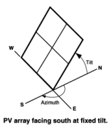
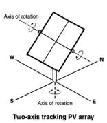

The PV System page is where you define the parameters of the photovoltaic system, which includes the photovoltaic array and inverter. The fuel cell model uses an implementation of PVWatts to represent the photovoltaic system.
The inputs on the System Design page describe the physical characteristics of the photovoltaic system. You only need to provide basic information about the system. PVWatts makes assumptions about modules, inverter, and other parts of the system so you do not need to provide detailed information about those parts of the system.
System Parameters
The system inputs define the size of the system, losses, and the array orientation.
System nameplate capacity, kWdc
The DC system capacity is the DC (direct current) power rating of the photovoltaic array in kilowatts (kW) at standard test conditions (STC). PVWatts can model any size of array, from residential rooftop systems to large ground-mounted power generation systems.
Module type
The type of modules in the system. If you do not have information about the modules in the system, use the default standard module type.
Module |
Approximate |
Module |
Temperature |
Fill Factor (for self-shading) |
Standard (crystalline Silicon) |
19% |
Anti-reflective glass |
-0.37 %/°C |
77.8% |
Premium (crystalline Silicon) |
21% |
Anti-reflective glass |
-0.35 %/°C |
78.0% |
Thin film |
18% |
Anti-reflective glass |
-0.32 %/°C |
77.7% |
Note. The premium module type has a higher efficiency at Standard Operating Conditions (STC) than the standard and thin film module types. However, under different irradiance and weather conditions, the premium module type may operate at a lower efficiency than the standard or thin film type. For this reason, if you compare two systems that are identical except for the module type, you may find that the total annual or monthly output is slightly higher for the standard module type than the premium or thin film type.
Note that a system with a given nameplate capacity in kW and premium modules requires less area than a system with the same capacity and standard or thin film modules. If space for the array is limited, you may be able to design a higher capacity system using premium modules.
STC is defined as 1000 W/m² solar irradiance, 25°C cell temperature, and air mass of 1.5. For time steps with solar irradiance ranges of about 400 to 600 W/m², the premium module's efficiency may be less than the standard module.
DC to AC ratio
The DC to AC size ratio is the ratio of the inverter's AC rated size to the array's DC rated size. Increasing the ratio increases the system's output over the year, but also increases the array's cost. The default value is 1.10, which means that a 4 kW system size would be for an array with a 4 DC kW nameplate size at standard test conditions (STC) and an inverter with a 3.63 AC kW nameplate size.
For a system with a high DC to AC size ratio, during times when the array's DC power output exceeds the inverter's rated DC input size, the inverter limits the array's power output by increasing the DC operating voltage, which moves the array's operating point down its current-voltage (I-V) curve. PVWatts models this effect by limiting the inverter's power output to its rated AC size.
The default value of 1.10 is reasonable for most systems. A typical range is 1.10 to 1.25, although some large-scale systems have ratios of as high as 1.50. The optimal value depends on the system's location, array orientation, and module cost.
Rated inverter size, kWac
The nameplate capacity of inverters in the system.
Rated Inverter Size (kWac) = System Nameplate Capacity (kWdc) ÷ DC to AC Ratio
Inverter efficiency
The inverter's nominal rated DC-to-AC conversion efficiency, defined as the inverter's rated AC power in kilowatts divided by its rated DC power in kilowatts expressed as a percentage. The default value is 96%.
This is a nominal value. PVWatts calculates the inverter's hourly operating efficiency based on the nominal efficiency and an efficiency curve.
Estimated total module area, m²
This estimate of the total module area is used for the land area estimate under Land Area below. This represents the total surface area of the modules, regardless of the tilt angle. The approximate nominal efficiency depends on the module type as shown in the table above.
Estimated Total Module Area (m²) = System Nameplate Capacity (kW) ÷ Approximate Nominal Efficiency
Orientation and Tracking
Array type
The array type describes whether the PV modules in the array are fixed, or whether they move to track the movement of the sun across the sky with one or two axes of rotation. The default value is for a fixed array with no tracking.
Fixed open rack and roof mount
The array is fixed at the tilt and azimuth angles defined by the values of Tilt and Azimuth and does not follow the sun's movement.

For systems with fixed arrays, you can choose between an open rack or a roof mount.
Fixed open rack is appropriate for ground-mounted systems. The open rack option assumes that air flows freely around the array, helping to cool the modules and reduce cell operating temperatures. (The array's output increases as the cell temperature decreases for at a given incident solar irradiance.) The open rack option also assumes that modules are arranged in rows and uses the ground coverage ratio (GCR) to estimate irradiance losses due to self shading caused when modules in neighboring rows cause shadows on the array.
Fixed roof mount is typical of residential installations where modules are attached to the roof surface with standoffs that providing limited air flow between the module back and roof surface (typically between two and six inches). The roof mount option assumes that there is no self shading between modules.
1-axis tracking and 1-axis backtracking
The array is fixed at the angle from the horizontal defined by the value of Tilt and rotates about the tilted axis from east in the morning to west in the evening to track the daily movement of the sun across the sky. Azimuth determines the array's orientation with respect to a line perpendicular to the equator.

For 1-axis tracking, PVWatts models self shading based on the ground coverage ratio (GCR).
For 1-axis backtracking, PVWatts assumes that there is no self shading because the trackers rotate modules to avoid it. Backtracking is a tracking algorithm that rotates the array toward the horizontal during early morning and late evening hours to reduce the effect of self shading. The one-axis tracking algorithm assumes a rotation limit of ±45 degrees from the horizontal.
2-axis tracking
The array rotates from east in the morning to west in the evening to track the daily movement of the sun across the sky, and north-south to track the sun's seasonal movement throughout the year. For two-axis tracking, SAM ignores the values of Tilt and Azimuth.

PVWatts does not model self shading for 2-axis tracking. You can adjust the Losses to account for those losses.
Tilt, degrees
The array's tilt angle in degrees from horizontal, where zero degrees is a horizontal array, and 90 degrees is a vertical array. The tilt value must be between zero and 90 degrees, inclusive.
For fixed arrays, as a rule of thumb, system designers sometimes use the location's latitude (shown on the Location and Resource page) as the optimal array tilt angle. The actual tilt angle will vary based on project requirements. You can run a parametric analysis on tilt to find its optimal value.
For one-axis tracking, the tilt angle is typically zero for horizontal tracking.
The effect of the tilt angle depends on the tracking option:
•Fixed open rack, Fixed roof mount: The tilt angle is the angle formed between the surface of the array and a horizontal line parallel to the azimuth. An array with an azimuth angle of 180° and a tilt angle of 20° would be tilted from the horizontal at 20° facing south. An array with an azimuth angle of 0° and a tilt angle of 20° would be tilted from the horizontal at 20° facing north. For a horizontal array, use a tilt angle of zero.
•1-axis tracking, 1-axis backtracking: The tilt angle is the angle between the axis of rotation and the horizontal. One-axis trackers typically have a tilt angle of zero for a horizontal tracking axis.
•2-axis tracking: The Tilt input is disabled because the tracker sets the tilt and azimuth angle so the array follows the movement of the sun.
•Azimuth Axis: The tilt angle is fixed, and is the angle formed between the surface of the array and a line perpendicular to the bottom edge of the array.
Azimuth, degrees
The azimuth angle in degrees determines the array's east-west orientation, where 0 = North, 90 = East, 180 = South, and 270 = West, regardless of whether the array is in the northern or southern hemisphere. The azimuth value must be greater than or equal to zero and less than 360.
The effect of the azimuth angle depends on the tracking option:
•Fixed open rack, Fixed roof mount: The azimuth angle determines the direction the array faces. North of the equator, the azimuth for a south-facing array is 180 degrees. South of the equator, the azimuth for a north-facing array is 0 degrees.
•1-axis tracking, 1-axis backtracking: The azimuth angle determines the orientation of the rotation axis. An azimuth of 180 is for a tracker with a North-South rotation axis that rotates from East to West. When the azimuth angle is 180°, the rotation angles reported in the results are negative when the tracker faces east and positive when it faces west. When the azimuth angle is 0°, rotation angles are positive when the tracker faces east and negative when it faces west.
•2-axis tracking: The Azimuth input is disabled because the tracker sets the azimuth angle so the array follows the movement of the sun.
Ground coverage ratio (GCR)
The ratio of the photovoltaic array area to the ground area occupied by the array. The ground coverage ratio must be a value greater than 0.01 and less than 0.99.
PVWatts uses the GCR to estimate self-shading losses for the fixed open rack and 1-axis array types, and to determine when to backtrack for the 1-axis backtracking option. The GCR does not apply to the fixed roof mount and 2-axis tracking array types.
For an array configured in rows of modules, the GCR is the length of the side of one row divided by the distance between the bottom of one row and the bottom of its neighboring row. Increasing the GCR decreases the spacing between rows.
System Losses
Losses account for reduction in performance not explicitly calculated by the PVWatts model. SAM applies the total system losses to the AC power output calculated by the model. You can either enter a total loss value, or have SAM calculate the total loss value from the loss categories.
Specify total system loss
Check this option if you want to specify a single loss value instead of values for each of the categories listed below.
Soiling
Losses due to dust, dirt, and other foreign matter on the surface of the PV module that prevent solar radiation from reaching the cells. Soiling is location- and weather-dependent. There are greater soiling losses in high-traffic, high-pollution areas with infrequent rain.
Shading
Reduction in the incident solar radiation caused by hills, trees, or other objects on the horizon. The default value is 3%. Note that PVWatts accounts for self shading between rows of modules for the fixed open rack and 1-axis tracking array types, so you should not include self-shading in the shading loss for those options.
Snow
Reduction in the system's annual output due to snow covering the array. The default value is zero, assuming either that there is never snow on the array, or that the array is kept clear of snow.
Note. If your weather file includes snow depth data and you enable the snow model, you should set the Snow loss to zero.
Mismatch
Electrical losses due to slight differences caused by manufacturing imperfections between modules in the array that cause the modules to have slightly different current-voltage characteristics. The default value of is 2%.
Wiring
Resistive losses in the DC and AC wires connecting modules, inverters, and other parts of the system. The default value is 2%.
Connections
Resistive losses in electrical connectors in the system. The default value is 0.5%.
Light-Induced Degradation
Effect of the reduction in the array's power during the first few months of its operation caused by light-induced degradation of photovoltaic cells. The default value is 1.5%.
Nameplate Rating
The nameplate rating loss accounts for the accuracy of the manufacturer's nameplate rating. Field measurements of the electrical characteristics of photovoltaic modules in the array may show that they differ from their nameplate rating. A nameplate rating loss of 5% indicates that testing yielded power measurements at STC that were 5% less than the manufacturer's nameplate rating. The default value is 1%.
Age
Effect of weathering of the photovoltaic modules on the array's performance over time. The default value is zero.
Note. If you specify a degradation rate on the AC Degradation page to represent module degradation, you should set the Age loss to zero.
Availability
Reduction in the system's output cause by scheduled and unscheduled system shutdown for maintenance, grid outages, and other operational factors. The default value is 3%.
Note. If you specify system availability losses to represent operating losses, you should set the Availability loss to zero.
Total system losses
The total loss, either calculated from the loss categories listed above, or equal to the total system loss you specify.
Total system losses = 100% × { 1 - [ ( 1 - Soiling ÷ 100% )
× ( 1 - Shading ÷ 100% )
× ( 1 - Snow ÷ 100% )
× ( 1 - Mismatch ÷ 100% )
× ( 1 - Wiring ÷ 100% )
× ( 1 - Connections ÷ 100% )
× ( 1 - Light-induced degradation ÷ 100% )
× ( 1 - Nameplate ÷ 100% )
× ( 1 - Age ÷ 100% )
× ( 1 - Availability ÷ 100% ) ] }